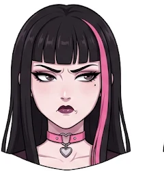

Ein Herz aus Kajal. Ein Magen aus Leberkas.
Oida Leberkas
Sie trägt Schwarz, liest Tarot und glaubt an genau eine Sache: die warme Scheibe in der Semmel. Jeden Tag ein Eintrag aus ihrem Tagebuch.
Steckbrief

„Alles is vergänglich. Außer mei Hunger.“
- Lieblingsfarbe
- Schwarz. Zweitliebste: dunkleres Schwarz.
- Lieblingsessen
- Leberkassemmel mit Senf. Nie Ketchup. Niemals.
- Wohnt
- Wien, Nähe Zentralfriedhof. Wegen der Ruhe.
- Hobbys
- Friedhofsspaziergänge, Tarot, Kajal nachziehen, The Cure in Dauerschleife.
- Haustier
- A Fledermaus namens Kren.
- Sternzeichen
- Skorpion. Eh klar.
- Größte Angst
- Sonnenlicht und eine leere Leberkas-Vitrine.
- Guilty Pleasure
- Pizzaleberkas. Sag es niemandem.
Aus ihrem Tagebuch
Alle EinträgeManchmal sitz i am Fenster und frag mi, ob irgendwer mi wirklich versteht.
Die Nacht is kalt und leer, so wie mei Herz.
Irgendwann san ma alle nur mehr Staub.
Semmel-Tarot
Konzentrier di. Denk an a Frage. Oder an a Semmel. Is eh meistens dasselbe.
?
Zieh a Karte
Die Karten wissen, was du heut isst.
Wie viel Grufti steckt in dir?
Die Frage der Woche
Leberkassemmel: süßer oder scharfer Senf?